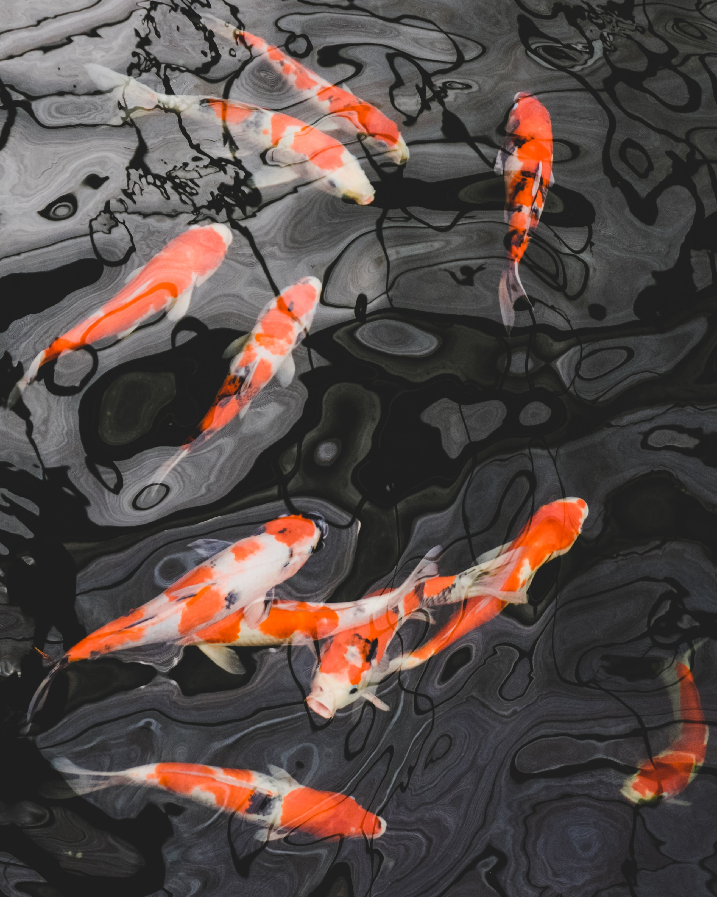
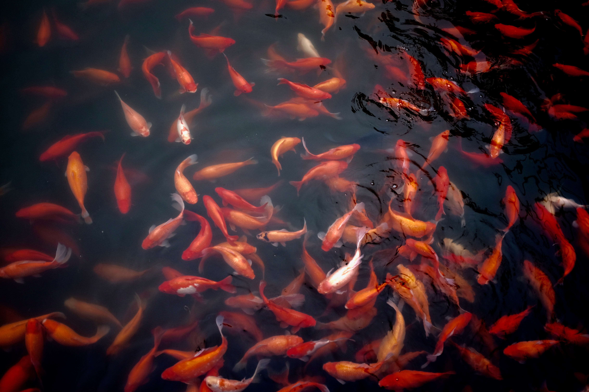

Description
Koi fish are colorful, ornamental versions of the common carp. Modern Japanese koi are believed to date back to early 19th- century Japan where wild, colorful carp were caught, kept and bred by rice farmers. Koi varieties are distinguished by coloration, patterning, and scalation. Some of the major colors are white, black, red, orange, yellow, blue, and cream. The common carp is a large, dull grey bottom-feeding fish, though the colorful koi have been bred in Japan for centuries. _______________________________________________________________________________________________________________
Taxonomy
In the past, koi were commonly believed to have been bred from the common carp. Due to the widespread disbursement of the carp, there are many different subspecies, including the koi fish.
Where do they come from?
Koi are an ornamental species of fish that descend from the carp. In the 1600s, Chinese farmed carp in rice paddies, a practice that traveled to Japan, where the Japanese noticed odd color variations in some of the carp and bred them, creating the koi species. Koi used to only be found in red, white, black and blue, but have since been bred in different combinations of all the colors in the rainbow. _______________________________________________________________________________________________________________
Biology
The bright colors of koi put them at a severe disadvantage against predators There are many types of koi fish. They are determined by the patterns and colors. The largest koi fish ever recorded was a whooping four feet long and 91 pounds! The monster sized fish was later sold to the koi enthusiast Geoff Lawton where she received the name Big Girl. ___________________________________________________________________________________________________________________________
Behavior
Koi will migrate significant distances to reach their preferred spawning grounds — flooded meadows and stagnant marshy areas. The breeding season is in the spring, around May or June. Females reproduce for the first time when they are between 4 and 6 years old, males when they are between 3 and 5 years old
Can they live with other fish?
Koi are docile, social fish that enjoy living in pairs or groups. When considering whether or not to add a new fish to an existing habitat, always make sure that their environmental and nutritional requirements are the same as the current fish, and, in the case of adding a koi fish to an existing pond, make sure that the size of your pond is large enough to support a full-grown koi. Koi are truly friendly and will not eat other fish or fight with each other. ___________________________________________________________________________________________________________________________
Ecology

The Amur carp is a hardy fish, and koi retain that durability. Koi are coldwater fish. The length of a koi can average up to about 3.28 feet. On average they also grow about 2 centimeters per month. Koi have been accidentally or deliberately released into the wild in every continent except Antarctica.
How big do they get?
Koi fish are quite large and, with proper care, can grow to be between two and three feet in length. The Chagoi variety of koi get even larger – up to four feet long in some cases. Young koi can be kept in large indoor aquariums but need to be transferred to a large pond as they grow. They are a heavy-bodied fish with an average weight of around 35 pounds. Because they’re such a large fish, koi ponds need to be large. A good rule of thumb is that a pond should contain 500 to 1,000 gallons of water for each adult koi it houses. ___________________________________________________________________________________________________________________________
Relationship with Humans
Modern Japanese koi are believed to date back to early 19th-century Japan where wild, colorful carp were caught, kept and bred by rice farmers. Koi fish usually lives between 25 and 30 years. When it is kept under good conditions, koi fish can survive for more than 100 years.
Where can you buy them?
These days, koi are still one of the most popular and beloved types of fish in the world and are widely available no matter where you live. Pet koi typically come from commercial farms in Europe, Asia and the United States and are readily available at most pet stores. There are also specialized koi breeders and farms that you can buy koi from.